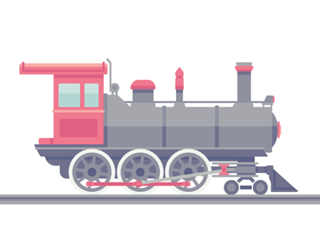

5
rahmad ganteng amat
HALLO IBUKU SAYANG
Semangat ibuku yang kuat, semoga sebentar lagi Allah memberi kebahagiaan sepanjang masa kepadamu
Putar Musik
Galeri Foto

PENCET DISINI
Your browser does not support the audio element.
I LOVE U